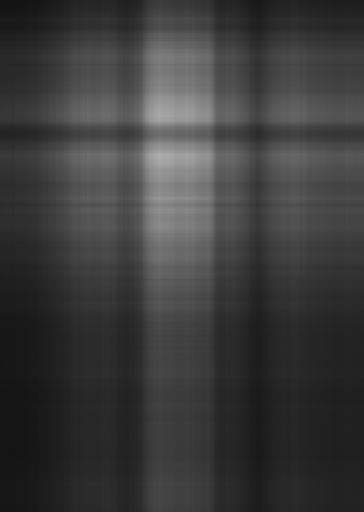
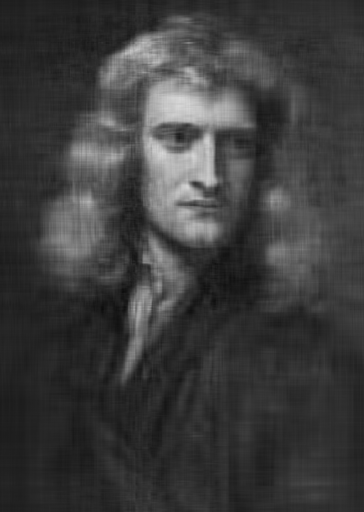
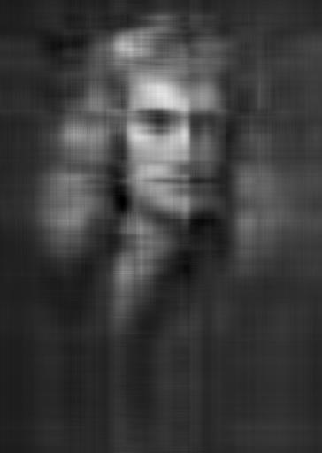
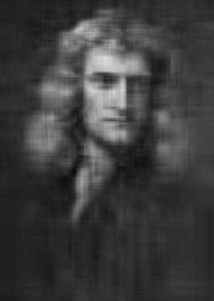
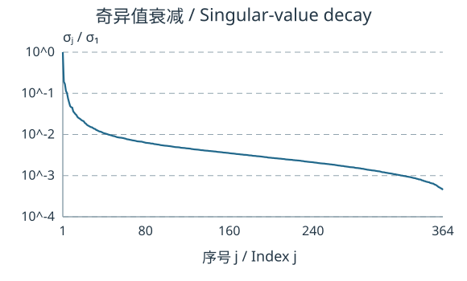
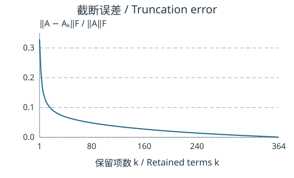
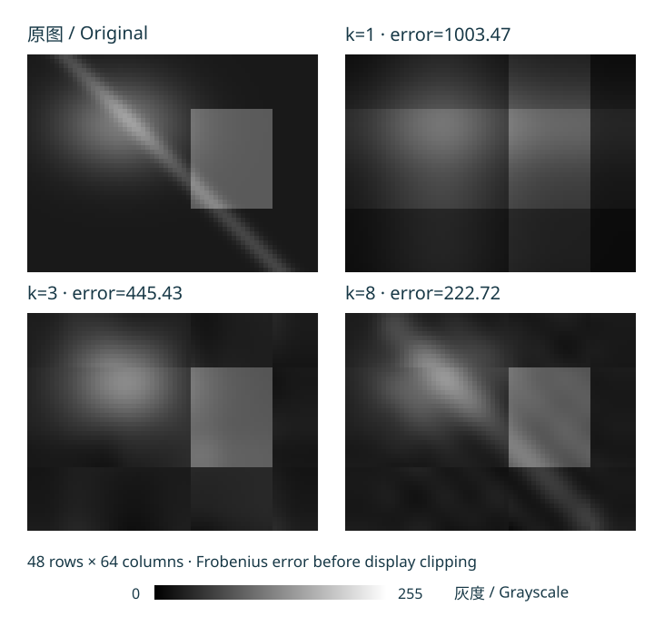

低秩近似与图像表示
Low-Rank Approximation and Image Representation
上一页用全部正奇异值精确表示矩阵。如果只保留最强的几个方向，误差是多少？本页是承接教材§7.4的课程补充，讨论矩阵本身的近似。下一页的教材§7.5则把多通道像素当作数据向量，用PCA寻找数据所在空间中的变化方向；两种数据对象需要分清。
从精确分解到截断 From an Exact Decomposition to Truncation
设 、，简化SVD给出 外积 的每列都是 的倍数；因两向量都非零，它的秩是1。乘以正数 后仍是秩一矩阵。零系数项不应称为秩一项。
对整数 定义截断SVD（truncated SVD） ，，且 。相比精确秩分解 / Exact Rank Factorization，两者都用较少方向描述矩阵；SVD还提供正交方向、按大小排序的伸缩量以及下面可计算的截断误差。
先说明怎样量误差 Specify the Error Measure First
矩阵 的 Frobenius范数（Frobenius norm）定义为 它把所有条目误差的平方相加，也等于各列欧氏长度平方和的平方根。相应内积为 。外积项满足 故这些矩阵在该内积下标准正交。对剩余项使用勾股定理便得到 这是代数恒等式，与图像显示方式无关。
最佳低秩近似（best low-rank approximation，课程补充）。 在所有同尺寸且 的实矩阵中， 使 最小。这里比较的是全部满足秩约束的矩阵，并非只比较删去不同SVD项的几种选择。最优解可能不唯一，尤其截断处有相等奇异值时。
完整证明：一般最优性 / Full Proof: General Optimality
任取 ，设 是到 的正交投影。逐列使用正交分解， 因为右奇异向量正交， 每个 。把 补全为输出空间的标准正交基；用 的 个标准正交基方向展开可得 ，所以 。
在权重总量不超过 、每项不超过1的条件下，给最大的 个 各权重1能取得最大加权和。严格地，对 ， 因此 ，从而任意 的误差平方至少为尾和 。 达到这个界。 时唯一允许矩阵是零矩阵； 时 自身误差为零，端点也成立。
选读：欧氏算子范数 / Optional: The Euclidean Operator Norm
定义 ，它测量最不利单位输入的输出长度。由SVD，（）， 时为零。它也是所有秩不超过 的矩阵所能达到的最小算子范数误差。
证明下界：对任意秩不超过 的 ，限制在 上必有非零核向量，归一化成 。于是 ，而 ，故 。 达到它。这个“最佳”与主文使用的Frobenius范数有各自明确定义，不能省略范数名称。
小矩阵：看清每一个误差条目 A Small Matrix: Inspect Every Error Entry
取 其左奇异方向可取 、；奇异值为 。投影到首方向得到 八个误差条目的平方都是 ，故总平方误差为2，与尾奇异值平方吻合；原矩阵平方范数为10。保留首项保存了 的平方范数，但是否满足某项应用需求仍要看误差尺度和目标。
灰度图：矩阵的行列是像素位置 A Grayscale Image: Rows and Columns Are Pixel Positions
这次把牛顿肖像作为一个 的灰度矩阵 。行是从上到下的像素位置，列是从左到右的位置；条目是灰度，不是牛顿的物理状态或一组居中后的样本。原始彩色JPEG先按Pillow的 L 转换为灰度，再用Lanczos重采样至高512、宽364。不减均值、不逐图拉伸对比度；以下所有面板都用黑0、白255的共同范围。


进一步观察：其余截断 / Further Observation: Other Truncations


代数近似 的条目可能越出 。面板仅在显示时裁剪、四舍五入成8位像素；这种非线性处理后，显示矩阵一般不再等于 ，也不一定仍有秩 。下面的误差全部用未裁剪、未取整的float64矩阵计算，并独立核对奇异值尾和： 这里软件返回364个奇异值。主图的 相对误差约为 ； 是保留的矩阵平方范数比例，并非“保留了多少视觉信息”。


用同一种预算比较 Compare Like Storage Budgets
原灰度阵列有 个条目。若存 个奇异值和两组向量，因子表示有 个标量。下面第三列只比较标量个数；第四列假设因子用float32（每数4字节），原图为未经压缩的8位灰度（每像素1字节）。均不计容器或元数据开销，不与JPEG、PNG文件大小混比。
| k | 相对误差 / Relative error | 数目比例 / Scalar ratio | float32/raw8字节预算 / Byte budget |
|---|---|---|---|
| 1 | 32.9213% | 0.4706% | 1.8823% |
| 5 | 17.2136% | 2.3529% | 9.4115% |
| 10 | 12.4675% | 4.7057% | 18.8230% |
| 20 | 9.2849% | 9.4115% | 37.6459% |
| 40 | 6.8854% | 18.8230% | 75.2919% |
| 80 | 4.8531% | 37.6459% | 150.5838% |
| 160 | 2.7476% | 75.2919% | 301.1676% |
例如 的因子数占原阵列约 ，在上述字节假设下却占 。 已超过原始8位阵列的字节数。低秩表示是否节省存储，必须同时说清秩、精度和比较对象。
从面板读出什么 What the Panels Do and Do Not Show
随着 增加，图中的大块明暗和细节逐渐显现，误差单调不增。但SVD的方向由这幅矩阵决定，不能把每一项固定解释成某个空间频率。细节不一定都是噪声，噪声也可能进入大奇异值方向；没有噪声模型和目标指标，不能宣布截断已经成功去噪。
- 在 的面板中，哪一级已能辨认脸部和头发？这个观察能替代Frobenius误差吗？
- 用表中的 估算保留的平方范数比例。能称它为“视觉信息保留率”吗？
- 在float32因子与原始8位灰度的假设下，求仍比原阵列小的最大整数 。
完整解答 / Full Solution
- 辨认程度是读者观察，可以描述但不应伪造统一阈值；它与逐像素平方误差回答不同问题。
- ，即约 的平方范数；不能将此改名为视觉信息。
- 解 ，得 ，故最大整数为53。若改用float64，还须重新计算。
图像来源与复现 / Image Credit and Reproduction. 肖像为依Godfrey Kneller的1689年牛顿肖像所作的复制画；Wikimedia Commons原文件页的作者栏写作“James Thronill after Sir Godfrey Kneller”，并标注公共领域及Public Domain Mark。它不是牛顿的摄影照片。使用教师提供的原始JPEG；2026-11-01核对来源和许可，并从公开原图地址重新下载，SHA-256与所用JPEG一致；教师原包的首次下载日期未提供。可查看同一原始JPEG、来源及处理记录、重新计算的指标和奇异值序列。可复现程序为源码中的 scripts/build-course-wide-figures.py；显示图与数值误差来自各自明确的处理步骤。


进一步阅读：保留的小型合成图 / Further Reading: The Retained Synthetic Example
把一幅灰度图表示为 矩阵 ，每个条目为一个像素的灰度值，取值0到255。下图由可复现公式生成，比较原矩阵与几个截断；各图使用同一灰度范围，黑为0、白为255。标题给出显示裁剪以前的 ；像素坐标按行向下、列向右排列。

代数近似 的条目可能越出 。图中为显示而将越界值裁剪到该范围；裁剪后的显示矩阵一般不再等于 ，也不一定仍有秩 。上面的误差公式用于未裁剪的 。
若直接存原矩阵，需要 个数。若存 个奇异值以及两组长度分别为 的向量，约需 个数，不计格式开销。例如这里 ， 时需904个数， 时需3616个数，后者反而更多。实际文件大小还取决于精度与编码。
只有奇异值明显衰减时，少数项才可能在较小误差下保留较多矩阵结构。低秩截断也可能删去有用的细节；噪声可能落在大奇异值方向，所以不能无条件把截断称为成功去噪。
动笔：选择秩与预算 Practice: Choose a Rank and a Storage Budget
某 矩阵的正奇异值为 。求秩一、秩二截断的Frobenius误差，若要求误差不超过1，最少保留几项？按本页的因子存储方式分别需要多少个数？
提示 / Hint
先比较尾奇异值的平方和，再比较 与600。
完整解答 / Full Solution
秩一误差为 ，秩二误差为1，所以至少取 。因一般最优性成立，换成另一个秩一矩阵也不能达到误差1。存储分别为51、102个数，均小于600；完整秩三因子需要153个数并能精确重建。误差是范数，不能把尾平方和10误写为秩一误差。
下一主题：主成分分析与数据降维 / Next: Principal Component Analysis and Dimensionality Reduction。